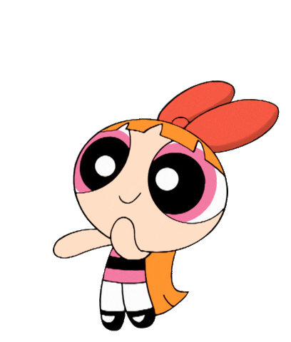
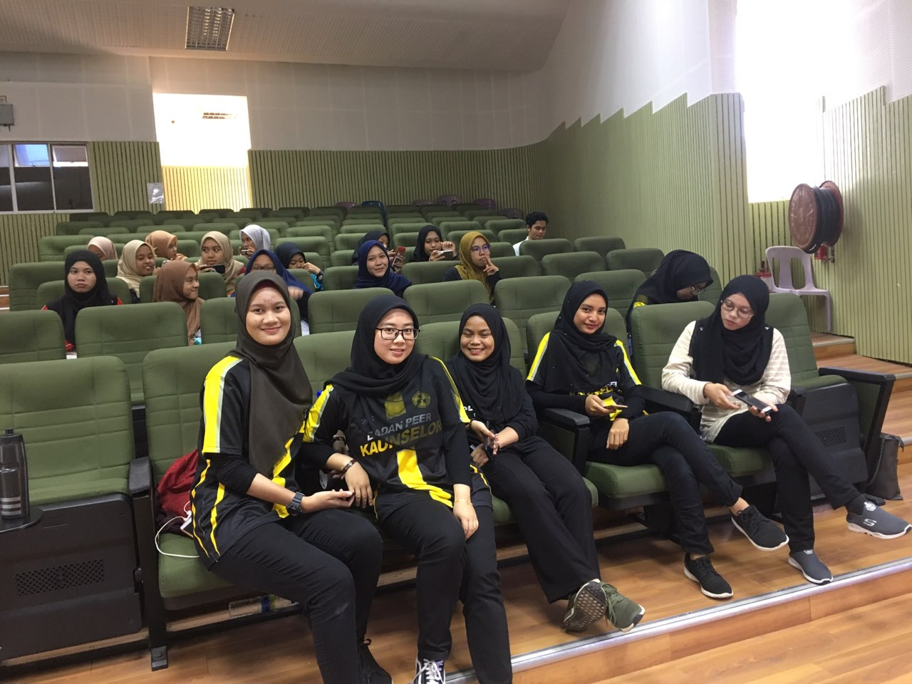
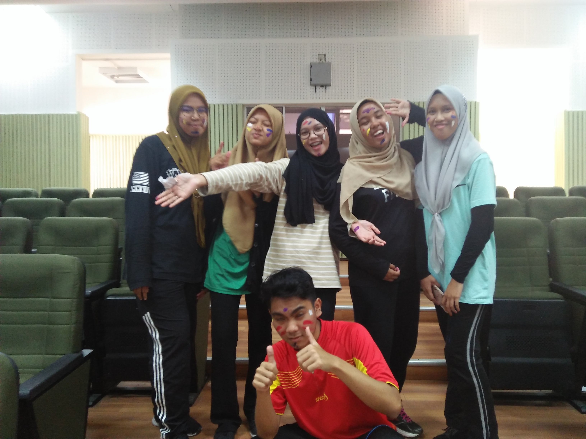

Hi and assalamualaikum everyone ! Below are my about myself. Check them out guys!
Hi. My name is Nurin Mahirah bt. Zulfikri. I am turning 21 years old on this December. I live in Kota Bharu with my parents. All my friends are from the city too. Like many people who are residents of the town, my family also has migrated from Kuala Terengganu to come and settle here. I did my schooling in Kota Bharu when i was 10 years old. And this is me:
Everyone has a family. Either small family or big family. For me, I have a small family which consists of my parents, and my 5 other sisters (including me). I am the fourth one. My father works as a Senior Lecturer in Kolej Komuniti Kok Lanas meanwhile my mom is a fully housewife My eldest sister works as Account Manager in Etiqa Kota Bharu and my second eldest sister works as a Lawyer in Chua & Partners Kuala Lumpur. My third sister right now is doing her internship in Tabung Haji Kuala Lumpur meanwhile my last sister is still schooling. This is us:
When i was in UiTM Dungun, i have joined PEERS Club as a Leader of Media Bureau. I am the person who is incharge for editing all the montage videos and others that related to any media things. I am good in working as a group/team. I am also the person who is incharge for creating PEERS UiTM Dungun club instagram account. These are some informal photos with my teams:  
It was all fun back then without COVID-19 restrictions :') .